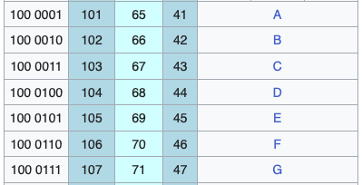
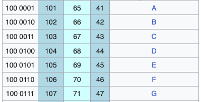

data()
cars
?carsAcknowledgements
Material for this lecture was borrowed and adopted from
- http://rafalab.dfci.harvard.edu/dsbook/importing-data.html # Introduction
So far, we have been working within R, either typing data in directly or using R’s functions to generate data. In order to analyze your own data, you have to load data from an external file into R. Similarly, to save your work, you’ll probably want to write files from R to your hard drive. Both of these require interacting with your computer’s operating system. In this chapter, we’re just going to do it. We’ll talk more about what’s going on in a later section on the R Environment.
There are many different ways to access data in R
- Built-in datasets - useful for practice
- Text files, importing from .csv is especially easy
- Files in other formats, e.g., .xls
- readLines from a connection including files
- Data not on your local computer, e.g., piped via a url
- Special connections, e.g., google sheets
Built-in datasets
R has many built-in datasets that come distributed with R. They are very useful for demonstrating Rʻs many functions for statistics, plotting, and other uses.
To see a list of them, you can type data() at the command line. To see the contents, type the name of the dataset. To see the help page type a ? in front of the name:
You can use built-in data in R by referring to the names of the objects.
head(cars) speed dist
1 4 2
2 4 10
3 7 4
4 7 22
5 8 16
6 9 10plot(cars)
The biggest issue for fairly new users
In order for R to read in data, it needs to know (1) where it the data stream, and (2) what in the datastream it is looking for. In the case of built-in datasets, both problems are solved as it is already imported into R.
The biggest issue most new-ish users experience when the path or filename is incorrect. For example, I donʻt have a file called “dat.csv” here, so this is a common error:
R
> read.csv("dat.csv")
Error in file(file, "rt") : cannot open the connection
In addition: Warning message:
In file(file, "rt") : cannot open file 'dat.csv': No such file or directoryThe cannot open the conection is a pipe or path error. It cannot open a pipe or a connection to the file. No such file or directory is just that. R doesnʻt know where the file is. Is there a typo? Is it the correct path?
Once we are in the correct working directory and fixed all typos, most of the time we are good, but we may have some surprises in the file format which weʻll go into below.
The issue is basically that R is parsing the information stream as it reads the file and filtering what counts as data, and what is not data (also called “delimeters” or the things that separate your data). Once you understnad how to specify delimeters, you are in great shape!
Reading in Text Files
The most convenient way to read data into R is using the read.csv() function. This requires that your data is saved in .csv format, which is possible from Microsoft Excel (save as… csv) or any spreadsheet format. It is a text format with data separated by commas. (Open it in a plain text editor and take a look).
It is very nice because it is unambiguous, not easily corruptible, and non-proprietary. Thus it is readable by nearly every program that reads in data.
Get the files onto your computer
First, get the data files from the rcassdatadata GitHub repo. Navigate to within the rclassdata folder on your computer and execute:
Terminal
git pull origin mainYou should probably make a R working directory for your class work. Maybe call it Rclass? Then move or drag rclassdata within it.
Next, from within R, check which working directory you are in. You should be in your Rclass folder. If you are not, use setwd() to get there.
getwd()
setwd("~/Rclass") # my folder is at the top level of my user directoryCopy the 2023-01-31-DataIO folder into Rclass to work for today.
read.csv
Getting the file in is easy. If it is in csv format, you just use:
read.csv("anolisSSD.csv") # look for the file in the Data directoryThis is an Anolis lizard sexual size dimorphism dataset. It has values of dimorphism by species for different ecomorphs, or microhabitat specialists.
To save the data, give it a name and save it:
anolis <- read.csv("anolisSSD.csv")It is a good practice to always check that the data were read in properly. If it is a large file, you’ll want to at least check the beginning and end were read in properly:
head(anolis) species logSSD ecomorph
1 oc -0.00512 twig
2 eq 0.08454 crown-giant
3 co 0.24703 trunk-crown
4 aln 0.24837 trunk-crown
5 ol 0.09844 grass-bush
6 in 0.06137 twigtail(anolis) species logSSD ecomorph
18 cr 0.39796 trunk-ground
19 st 0.15737 trunk-crown
20 cy 0.26024 trunk-ground
21 alu 0.08216 grass-bush
22 lo 0.13108 trunk
23 an 0.13547 twigVoila! Now you can plot, take the mean, etc. Which prints out the first six and last six lines of the file.
Now try reading in anolisSSDsemicolon.csv what did you get? Try reading it in with read.table() - check out the help page.
R can read in many other formats as well, including database formats, excel native format (although it is easier in practice to save as .csv), fixed width formats, and scanning lines. For more information see the R manual “R Data Import/Export” which you can get from help.start() or at http://www.r-project.org.
Input files generated by data loggers
Files that are generated by computer, even if they are not separated by commas (.csv) are not too bad to deal with. Take, for example, the file format generated from our hand-held Ocean Optics specroradiometer. It is very regular in structure, and we have tons of data files, so it is well worth the programming effort to code a script for automatic file input.
First, you can open the file below in a text editor. If you’d rather open it in R, you can use:
readLines("20070725_01forirr.txt")Notice that there is a very large header, in fact the first 17 lines. Notice also that the last line will cause a problem. Also, the delimiter in this file is tab (backslash t).
temp <- readLines("20070725_01forirr.txt")
head(temp)
tail(temp)We can solve these issues using the skip and the comment.char arguments of read.table to ignore both types of lines, reading in only the “good stuff”. Also, the default delimiter in this function is the tab:
dat <- read.table(file="20070725_01forirr.txt", skip=17, comment.char=">")
names(dat) <- c("lambda", "intensity")
head(dat) lambda intensity
1 177.33 0
2 177.55 0
3 177.77 0
4 177.99 0
5 178.21 0
6 178.43 0tail(dat) lambda intensity
3643 888.21 0.29491
3644 888.38 0.31306
3645 888.54 0.28153
3646 888.71 0.28245
3647 888.87 0.18988
3648 889.04 0.18988The file produces (useless) rows of data outside of the range of accuracy of the spectraradiometer. We can get rid of these by subsetting the data, selecting only the range 300-750nm:
dat <- dat[dat$lambda >= 300, ] # cut off rows below 300nm
dat <- dat[dat$lambda <= 750, ] #cut off rows above 750nmOr do both at once:
dat <- dat[dat$lambda >= 300 & dat$lambda <= 750,]If we are going to be doing this subsetting over and over, we might want to save this as an index vector which tells us the position of the rows of data we want to keep in the dataframe (don’t worry, we’ll cover this again in the workhorse functions chapter).
oo <- dat$lambda >= 300 & dat$lambda <= 750
dat <- dat[oo, ] # same as longer version aboveWe can now save the cleaned up version of the irradiance data:
write.csv(dat, "20070725_01forirr.csv")Read from URL
A URL is just another datastream or pipe. If it is a .csv file on the internet, R supports reading it in directly:
anolis2 <- read.csv("https://raw.githubusercontent.com/mbutler808/rclassdata/main/2023-01-31-DataIO/anolisSSD.csv")
head(anolis2) species logSSD ecomorph
1 oc -0.00512 twig
2 eq 0.08454 crown-giant
3 co 0.24703 trunk-crown
4 aln 0.24837 trunk-crown
5 ol 0.09844 grass-bush
6 in 0.06137 twigcbind(anolis, anolis2) species logSSD ecomorph species logSSD ecomorph
1 oc -0.00512 twig oc -0.00512 twig
2 eq 0.08454 crown-giant eq 0.08454 crown-giant
3 co 0.24703 trunk-crown co 0.24703 trunk-crown
4 aln 0.24837 trunk-crown aln 0.24837 trunk-crown
5 ol 0.09844 grass-bush ol 0.09844 grass-bush
6 in 0.06137 twig in 0.06137 twig
7 cu 0.09501 crown-giant cu 0.09501 crown-giant
8 ri 0.08947 crown-giant ri 0.08947 crown-giant
9 sa 0.28893 trunk-ground sa 0.28893 trunk-ground
10 op 0.15963 grass-bush op 0.15963 grass-bush
11 va 0.14766 twig va 0.14766 twig
12 li 0.38873 trunk-ground li 0.38873 trunk-ground
13 ga 0.28768 crown-giant ga 0.28768 crown-giant
14 gr 0.39786 trunk-crown gr 0.39786 trunk-crown
15 br 0.17106 trunk br 0.17106 trunk
16 di 0.13801 trunk di 0.13801 trunk
17 kr 0.23478 grass-bush kr 0.23478 grass-bush
18 cr 0.39796 trunk-ground cr 0.39796 trunk-ground
19 st 0.15737 trunk-crown st 0.15737 trunk-crown
20 cy 0.26024 trunk-ground cy 0.26024 trunk-ground
21 alu 0.08216 grass-bush alu 0.08216 grass-bush
22 lo 0.13108 trunk lo 0.13108 trunk
23 an 0.13547 twig an 0.13547 twig
Use the correct file format
Make sure that your URL leads to a raw .csv file, and not the .html rendering of your csv file!
What to do when your spreadsheet is malformed
You will inevitably run into malformed spreadsheets. If there are unexpected characters used as delimiters, irregular delimiters, or uneven numbers of elements, these will all cause problems reading in data smoothly into any software.
Most of the time, these issues are inadvertent. For example, if you cut and paste off the web, extra characters can easily be introduced. Try reading in species_list_IUCN.csv. It is a large spreadsheet of every species of subfamily Asteriorphinae frog in the world (over 330). Does it look OK?
temp <- read.csv("species_list_IUCN.csv")
head(temp) SPECIES.OF.ASTEROPHRYINAE.REPRESENTED.IN.IUCN.SHAPEFILE.LIST.
1 Aphantophryne minuta
2 Aphantophryne nana
3 Aphantophryne pansa
4 Aphantophryne parkeri
5 Aphantophryne sabini
6 Asterophrys eurydactyla
X X.1 X.2 X.3
1 NA NA NA NA
2 NA NA NA NA
3 NA NA NA NA
4 NA NA NA NA
5 NA NA NA NA
6 NA NA NA NAtail(temp) SPECIES.OF.ASTEROPHRYINAE.REPRESENTED.IN.IUCN.SHAPEFILE.LIST.
333 Xenorhina similis
334 Xenorhina subcrocea
335 Xenorhina tillacki
336 Xenorhina tumulus
337 Xenorhina varia
338 Xenorhina zweifeli
X X.1 X.2 X.3
333 NA NA NA NA
334 NA NA NA NA
335 NA NA NA NA
336 NA NA NA NA
337 NA NA NA NA
338 NA NA NA NAItʻs hard to tell from this output what the problem is. Try readLines, which will show you the entire line of data:
tempL <- readLines("species_list_IUCN.csv")Warning in readLines("species_list_IUCN.csv"): incomplete final line found on
'species_list_IUCN.csv'head(tempL)[1] "SPECIES OF ASTEROPHRYINAE REPRESENTED IN IUCN SHAPEFILE LIST:,,,,"
[2] "Aphantophryne minuta ,,,,"
[3] "Aphantophryne nana ,,,,"
[4] " Aphantophryne pansa ,,,,"
[5] " Aphantophryne parkeri ,,,,"
[6] " Aphantophryne sabini ,,,,"tail(tempL)[1] " Xenorhina similis ,,,,"
[2] " Xenorhina subcrocea ,,,,"
[3] " Xenorhina tillacki ,,,,"
[4] " Xenorhina tumulus ,,,,"
[5] " Xenorhina varia ,,,,"
[6] " Xenorhina zweifeli ,,,,"Now you can clearly see that it is extra whitespace. Extra blank columns, and a huge long line of white space after each species name. Starting from Aphantophryne pansa, there are two extra spaces in front of each species name.
The easiest thing to do here is to open up the spreadsheet in your spreadsheet program (or plain text editor) and read it back in. Delete the extra columns, and do search and replace on the two leading spaces and trailing multiple spaces. Also change that very long name to something more reasonable like “gensp”. (This is an example of using variable names as annotations or comments - donʻt do it.)
Alternatively, you can solve these problems within R. We will learn these object and string manipulation skills later, but here is one way to solve the problems once you have diagnosed them.
Read in and select only the first columns
The rest of the columns are blank, so we really only need the first one. Also lets give it a shorter name.
dat <- read.csv("species_list_IUCN.csv")
dat <- dat[1] # select only the first column and resave dat
names(dat) <- "gensp" # give the column a shorter nameUse function trimws
R has a handy function trimws that trims white space
dat <- trimws(dat)
head(dat)[1] "c(\"Aphantophryne minuta \", \"Aphantophryne nana \", \" Aphantophryne pansa \", \" Aphantophryne parkeri \", \n\" Aphantophryne sabini \", \" Asterophrys eurydactyla \", \" Asterophrys foja \", \" Asterophrys leucopus \", \n\" Asterophrys marani \", \" Asterophrys pullifer \", \" Asterophrys slateri \", \" Asterophrys turpicola \", \n\" Austrochaperina adamantina \", \" Austrochaperina adelphe \", \" Austrochaperina alexanderi \", \" Austrochaperina aquilonia \", \n\" Austrochaperina archboldi \", \" Austrochaperina basipalmata \", \" Austrochaperina blumi \", \" Austrochaperina brevipes \", \n\" Austrochaperina derongo \", \" Austrochaperina fryi \", \" Austrochaperina gracilipes \", \" Austrochaperina hooglandi \", \n\" Austrochaperina kosarek \", \" Austrochaperina laurae \", \" Austrochaperina macrorhyncha \", \" Austrochaperina mehelyi \", \n\" Austrochaperina minutissima \", \" Austrochaperina novaebritanniae \", \" Austrochaperina palmipes \", \" Austrochaperina parkeri \", \n\" Austrochaperina pluvialis \", \" Austrochaperina polysticta \", \" Austrochaperina punctata \", \" Austrochaperina rivularis \", \n\" Austrochaperina robusta \", \" Austrochaperina rudolfarndti \", \" Austrochaperina septentrionalis \", \" Austrochaperina yelaensis \", \n\" Barygenys apodasta \", \" Barygenys atra \", \" Barygenys cheesmanae \", \" Barygenys exsul \", \n\" Barygenys flavigularis \", \" Barygenys maculata \", \" Barygenys nana \", \" Barygenys parvula \", \n\" Barygenys resima \", \" Callulops argus \", \" Callulops biakensis \", \" Callulops bicolor \", \n\" Callulops boettgeri \", \" Callulops comptus \", \" Callulops doriae \", \" Callulops dubius \", \n\" Callulops eremnosphax \", \" Callulops fojaensis \", \" Callulops fuscus \", \" Callulops glandulosus \", \n\" Callulops humicola \", \" Callulops kopsteini \", \" Callulops marmoratus \", \" Callulops mediodiscus \", \n\" Callulops microtis \", \" Callulops neuhaussi \", \" Callulops omnistriatus \", \" Callulops personatus \", \n\" Callulops robustus \", \" Callulops sagittatus \", \" Callulops stellatus \", \" Callulops stictogaster \", \n\" Callulops taxispilotus \", \" Callulops valvifer \", \" Callulops wilhelmanus \", \" Callulops wondiwoiensis \", \n\" Callulops yapenensis \", \" Choerophryne alainduboisi \", \" Choerophryne allisoni \", \" Choerophryne alpestris \", \n\" Choerophryne amomani \", \" Choerophryne arndtorum \", \" Choerophryne bickfordi \", \" Choerophryne bisyllaba \", \n\" Choerophryne brevicrus \", \" Choerophryne brunhildae \", \" Choerophryne bryonopsis \", \" Choerophryne burtoni \", \n\" Choerophryne crucifer \", \" Choerophryne darlingtoni \", \" Choerophryne epirrhina \", \" Choerophryne exclamitans \", \n\" Choerophryne fafniri \", \" Choerophryne gracilirostris \", \" Choerophryne grylloides \", \" Choerophryne gudrunae \", \n\" Choerophryne gunnari \", \" Choerophryne laurini \", \" Choerophryne longirostris \", \" Choerophryne microps \", \n\" Choerophryne multisyllaba \", \" Choerophryne murrita \", \" Choerophryne nigrescens \", \" Choerophryne pandanicola \", \n\" Choerophryne pipiens \", \" Choerophryne proboscidea \", \" Choerophryne rhenaurum \", \" Choerophryne rostellifer \", \n\" Choerophryne sanguinopicta \", \" Choerophryne siegfriedi \", \" Choerophryne swanhildae \", \" Choerophryne tubercula \", \n\" Choerophryne valkuriarum \", \" Choerophryne variegata \", \" Cophixalus aenigma \", \" Cophixalus albolineatus \", \n\" Cophixalus amabilis \", \" Cophixalus ateles \", \" Cophixalus australis \", \" Cophixalus balbus \", \n\" Cophixalus bewaniensis \", \" Cophixalus biroi \", \" Cophixalus bombiens \", \" Cophixalus cateae \", \n\" Cophixalus caverniphilus \", \" Cophixalus cheesmanae \", \" Cophixalus clapporum \", \" Cophixalus concinnus \", \n\" Cophixalus crepitans \", \" Cophixalus cryptotympanum \", \" Cophixalus cupricarenus \", \" Cophixalus daymani \", \n\" Cophixalus desticans \", \" Cophixalus exiguus \", \" Cophixalus hannahae \", \" Cophixalus hinchinbrookensis \", \n\" Cophixalus hosmeri \", \" Cophixalus humicola \", \" Cophixalus infacetus \", \" Cophixalus interruptus \", \n\" Cophixalus iovaorum \", \" Cophixalus kaindiensis \", \" Cophixalus kethuk \", \" Cophixalus kulakula \", \n\" Cophixalus linnaeus \", \" Cophixalus mcdonaldi \", \" Cophixalus melanops \", \" Cophixalus misimae \", \n\" Cophixalus monosyllabus \", \" Cophixalus montanus \", \" Cophixalus monticola \", \" Cophixalus neglectus \", \n\" Cophixalus nexipus \", \" Cophixalus nubicola \", \" Cophixalus ornatus \", \" Cophixalus pakayakulangun \", \n\" Cophixalus parkeri \", \" Cophixalus peninsularis \", \" Cophixalus petrophilus \", \" Cophixalus phaeobalius \", \n\" Cophixalus pictus \", \" Cophixalus pipilans \", \" Cophixalus pulchellus \", \" Cophixalus rajampatensis \", \n\" Cophixalus riparius \", \" Cophixalus salawatiensis \", \" Cophixalus saxatilis \", \" Cophixalus shellyi \", \n\" Cophixalus sphagnicola \", \" Cophixalus tagulensis \", \" Cophixalus tenuidactylus \", \" Cophixalus tetzlaffi \", \n\" Cophixalus timidus \", \" Cophixalus tomaiodactylus \", \" Cophixalus tridactylus \", \" Cophixalus variabilis \", \n\" Cophixalus verecundus \", \" Cophixalus verrucosus \", \" Cophixalus viridis \", \" Cophixalus wempi \", \n\" Cophixalus zweifeli \", \" Copiula annanoreenae \", \" Copiula exspectata \", \" Copiula fistulans \", \n\" Copiula guttata \", \" Copiula lennarti \", \" Copiula major \", \" Copiula minor \", \n\" Copiula obsti \", \" Copiula oxyrhina \", \" Copiula pipiens \", \" Copiula tyleri \", \n\" Hylophorbus atrifasciatus \", \" Hylophorbus infulatus \", \" Hylophorbus nigrinus \", \" Hylophorbus picoides \", \n\" Hylophorbus proekes \", \" Hylophorbus rainerguentheri \", \" Hylophorbus richardsi \", \" Hylophorbus rufescens \", \n\" Hylophorbus sextus \", \" Hylophorbus sigridae \", \" Hylophorbus tetraphonus \", \" Hylophorbus wondiwoi \", \n\" Mantophryne axanthogaster \", \" Mantophryne insignis \", \" Mantophryne lateralis \", \" Mantophryne louisiadensis \", \n\" Mantophryne menziesi \", \" Oninia senglaubi \", \" Oreophryne albitympanum \", \" Oreophryne albomaculata \", \n\" Oreophryne albopunctata \", \" Oreophryne alticola \", \" Oreophryne ampelos \", \" Oreophryne anamiatoi \", \n\" Oreophryne anser \", \" Oreophryne anthonyi \", \" Oreophryne anulata \", \" Oreophryne asplenicola \", \n\" Oreophryne atrigularis \", \" Oreophryne aurora \", \" Oreophryne banshee \", \" Oreophryne biroi \", \n\" Oreophryne brachypus \", \" Oreophryne brevicrus \", \" Oreophryne brevirostris \", \" Oreophryne brunnea \", \n\" Oreophryne cameroni \", \" Oreophryne celebensis \", \" Oreophryne choerophrynoides \", \" Oreophryne clamata \", \n\" Oreophryne crucifer \", \" Oreophryne curator \", \" Oreophryne equus \", \" Oreophryne ezra \", \n\" Oreophryne flava \", \" Oreophryne flavomaculata \", \" Oreophryne frontifasciata \", \" Oreophryne furu \", \n\" Oreophryne gagneorum \", \" Oreophryne geislerorum \", \" Oreophryne geminus \", \" Oreophryne graminis \", \n\" Oreophryne habbemensis \", \" Oreophryne hypsiops \", \" Oreophryne idenburgensis \", \" Oreophryne inornata \", \n\" Oreophryne insulana \", \" Oreophryne jeffersoniana \", \" Oreophryne kampeni \", \" Oreophryne kapisa \", \n\" Oreophryne lemur \", \" Oreophryne loriae \", \" Oreophryne matawan \", \" Oreophryne meliades \", \n\" Oreophryne mertoni \", \" Oreophryne minuta \", \" Oreophryne moluccensis \", \" Oreophryne monticola \", \n\" Oreophryne nicolasi \", \" Oreophryne notata \", \" Oreophryne oviprotector \", \" Oreophryne parkopanorum \", \n\" Oreophryne penelopeia \", \" Oreophryne philosylleptoris \", \" Oreophryne phoebe \", \" Oreophryne picticrus \", \n\" Oreophryne pseudasplenicola \", \" Oreophryne pseudunicolor \", \" Oreophryne roedeli \", \" Oreophryne rookmaakeri \", \n\" Oreophryne sibilans \", \" Oreophryne streiffeleri \", \" Oreophryne terrestris \", \" Oreophryne unicolor \", \n\" Oreophryne variabilis \", \" Oreophryne waira \", \" Oreophryne wapoga \", \" Oreophryne zimmeri \", \n\" Paedophryne amauensis \", \" Paedophryne dekot \", \" Paedophryne kathismaphlox \", \" Paedophryne oyatabu \", \n\" Paedophryne swiftorum \", \" Paedophryne titan \", \" Paedophryne verrucosa \", \" Siamophryne troglodytes \", \n\" Sphenophryne allisoni \", \" Sphenophryne alpestris \", \" Sphenophryne brevicrus \", \" Sphenophryne coggeri \", \n\" Sphenophryne cornuta \", \" Sphenophryne crassa \", \" Sphenophryne dentata \", \" Sphenophryne magnitympanum \", \n\" Sphenophryne miniafia \", \" Sphenophryne rhododactyla \", \" Sphenophryne rubra \", \" Sphenophryne schlaginhaufeni \", \n\" Sphenophryne similis \", \" Sphenophryne stenodactyla \", \" Sphenophryne thomsoni \", \" Vietnamophryne inexpectata \", \n\" Vietnamophryne occidentalis \", \" Vietnamophryne orlovi \", \" Xenorhina adisca \", \" Xenorhina anorbis \", \n\" Xenorhina arboricola \", \" Xenorhina arfakiana \", \" Xenorhina arndti \", \" Xenorhina bidens \", \n\" Xenorhina bouwensi \", \" Xenorhina brachyrhyncha \", \" Xenorhina eiponis \", \" Xenorhina fuscigula \", \n\" Xenorhina gigantea \", \" Xenorhina huon \", \" Xenorhina lanthanites \", \" Xenorhina macrodisca \", \n\" Xenorhina macrops \", \" Xenorhina mehelyi \", \" Xenorhina minima \", \" Xenorhina multisica \", \n\" Xenorhina obesa \", \" Xenorhina ocellata \", \" Xenorhina ophiodon \", \" Xenorhina oxycephala \", \n\" Xenorhina parkerorum \", \" Xenorhina rostrata \", \" Xenorhina scheepstrai \", \" Xenorhina schiefenhoeveli \", \n\" Xenorhina similis \", \" Xenorhina subcrocea \", \" Xenorhina tillacki \", \" Xenorhina tumulus \", \n\" Xenorhina varia \", \" Xenorhina zweifeli \")"tail(dat)[1] "c(\"Aphantophryne minuta \", \"Aphantophryne nana \", \" Aphantophryne pansa \", \" Aphantophryne parkeri \", \n\" Aphantophryne sabini \", \" Asterophrys eurydactyla \", \" Asterophrys foja \", \" Asterophrys leucopus \", \n\" Asterophrys marani \", \" Asterophrys pullifer \", \" Asterophrys slateri \", \" Asterophrys turpicola \", \n\" Austrochaperina adamantina \", \" Austrochaperina adelphe \", \" Austrochaperina alexanderi \", \" Austrochaperina aquilonia \", \n\" Austrochaperina archboldi \", \" Austrochaperina basipalmata \", \" Austrochaperina blumi \", \" Austrochaperina brevipes \", \n\" Austrochaperina derongo \", \" Austrochaperina fryi \", \" Austrochaperina gracilipes \", \" Austrochaperina hooglandi \", \n\" Austrochaperina kosarek \", \" Austrochaperina laurae \", \" Austrochaperina macrorhyncha \", \" Austrochaperina mehelyi \", \n\" Austrochaperina minutissima \", \" Austrochaperina novaebritanniae \", \" Austrochaperina palmipes \", \" Austrochaperina parkeri \", \n\" Austrochaperina pluvialis \", \" Austrochaperina polysticta \", \" Austrochaperina punctata \", \" Austrochaperina rivularis \", \n\" Austrochaperina robusta \", \" Austrochaperina rudolfarndti \", \" Austrochaperina septentrionalis \", \" Austrochaperina yelaensis \", \n\" Barygenys apodasta \", \" Barygenys atra \", \" Barygenys cheesmanae \", \" Barygenys exsul \", \n\" Barygenys flavigularis \", \" Barygenys maculata \", \" Barygenys nana \", \" Barygenys parvula \", \n\" Barygenys resima \", \" Callulops argus \", \" Callulops biakensis \", \" Callulops bicolor \", \n\" Callulops boettgeri \", \" Callulops comptus \", \" Callulops doriae \", \" Callulops dubius \", \n\" Callulops eremnosphax \", \" Callulops fojaensis \", \" Callulops fuscus \", \" Callulops glandulosus \", \n\" Callulops humicola \", \" Callulops kopsteini \", \" Callulops marmoratus \", \" Callulops mediodiscus \", \n\" Callulops microtis \", \" Callulops neuhaussi \", \" Callulops omnistriatus \", \" Callulops personatus \", \n\" Callulops robustus \", \" Callulops sagittatus \", \" Callulops stellatus \", \" Callulops stictogaster \", \n\" Callulops taxispilotus \", \" Callulops valvifer \", \" Callulops wilhelmanus \", \" Callulops wondiwoiensis \", \n\" Callulops yapenensis \", \" Choerophryne alainduboisi \", \" Choerophryne allisoni \", \" Choerophryne alpestris \", \n\" Choerophryne amomani \", \" Choerophryne arndtorum \", \" Choerophryne bickfordi \", \" Choerophryne bisyllaba \", \n\" Choerophryne brevicrus \", \" Choerophryne brunhildae \", \" Choerophryne bryonopsis \", \" Choerophryne burtoni \", \n\" Choerophryne crucifer \", \" Choerophryne darlingtoni \", \" Choerophryne epirrhina \", \" Choerophryne exclamitans \", \n\" Choerophryne fafniri \", \" Choerophryne gracilirostris \", \" Choerophryne grylloides \", \" Choerophryne gudrunae \", \n\" Choerophryne gunnari \", \" Choerophryne laurini \", \" Choerophryne longirostris \", \" Choerophryne microps \", \n\" Choerophryne multisyllaba \", \" Choerophryne murrita \", \" Choerophryne nigrescens \", \" Choerophryne pandanicola \", \n\" Choerophryne pipiens \", \" Choerophryne proboscidea \", \" Choerophryne rhenaurum \", \" Choerophryne rostellifer \", \n\" Choerophryne sanguinopicta \", \" Choerophryne siegfriedi \", \" Choerophryne swanhildae \", \" Choerophryne tubercula \", \n\" Choerophryne valkuriarum \", \" Choerophryne variegata \", \" Cophixalus aenigma \", \" Cophixalus albolineatus \", \n\" Cophixalus amabilis \", \" Cophixalus ateles \", \" Cophixalus australis \", \" Cophixalus balbus \", \n\" Cophixalus bewaniensis \", \" Cophixalus biroi \", \" Cophixalus bombiens \", \" Cophixalus cateae \", \n\" Cophixalus caverniphilus \", \" Cophixalus cheesmanae \", \" Cophixalus clapporum \", \" Cophixalus concinnus \", \n\" Cophixalus crepitans \", \" Cophixalus cryptotympanum \", \" Cophixalus cupricarenus \", \" Cophixalus daymani \", \n\" Cophixalus desticans \", \" Cophixalus exiguus \", \" Cophixalus hannahae \", \" Cophixalus hinchinbrookensis \", \n\" Cophixalus hosmeri \", \" Cophixalus humicola \", \" Cophixalus infacetus \", \" Cophixalus interruptus \", \n\" Cophixalus iovaorum \", \" Cophixalus kaindiensis \", \" Cophixalus kethuk \", \" Cophixalus kulakula \", \n\" Cophixalus linnaeus \", \" Cophixalus mcdonaldi \", \" Cophixalus melanops \", \" Cophixalus misimae \", \n\" Cophixalus monosyllabus \", \" Cophixalus montanus \", \" Cophixalus monticola \", \" Cophixalus neglectus \", \n\" Cophixalus nexipus \", \" Cophixalus nubicola \", \" Cophixalus ornatus \", \" Cophixalus pakayakulangun \", \n\" Cophixalus parkeri \", \" Cophixalus peninsularis \", \" Cophixalus petrophilus \", \" Cophixalus phaeobalius \", \n\" Cophixalus pictus \", \" Cophixalus pipilans \", \" Cophixalus pulchellus \", \" Cophixalus rajampatensis \", \n\" Cophixalus riparius \", \" Cophixalus salawatiensis \", \" Cophixalus saxatilis \", \" Cophixalus shellyi \", \n\" Cophixalus sphagnicola \", \" Cophixalus tagulensis \", \" Cophixalus tenuidactylus \", \" Cophixalus tetzlaffi \", \n\" Cophixalus timidus \", \" Cophixalus tomaiodactylus \", \" Cophixalus tridactylus \", \" Cophixalus variabilis \", \n\" Cophixalus verecundus \", \" Cophixalus verrucosus \", \" Cophixalus viridis \", \" Cophixalus wempi \", \n\" Cophixalus zweifeli \", \" Copiula annanoreenae \", \" Copiula exspectata \", \" Copiula fistulans \", \n\" Copiula guttata \", \" Copiula lennarti \", \" Copiula major \", \" Copiula minor \", \n\" Copiula obsti \", \" Copiula oxyrhina \", \" Copiula pipiens \", \" Copiula tyleri \", \n\" Hylophorbus atrifasciatus \", \" Hylophorbus infulatus \", \" Hylophorbus nigrinus \", \" Hylophorbus picoides \", \n\" Hylophorbus proekes \", \" Hylophorbus rainerguentheri \", \" Hylophorbus richardsi \", \" Hylophorbus rufescens \", \n\" Hylophorbus sextus \", \" Hylophorbus sigridae \", \" Hylophorbus tetraphonus \", \" Hylophorbus wondiwoi \", \n\" Mantophryne axanthogaster \", \" Mantophryne insignis \", \" Mantophryne lateralis \", \" Mantophryne louisiadensis \", \n\" Mantophryne menziesi \", \" Oninia senglaubi \", \" Oreophryne albitympanum \", \" Oreophryne albomaculata \", \n\" Oreophryne albopunctata \", \" Oreophryne alticola \", \" Oreophryne ampelos \", \" Oreophryne anamiatoi \", \n\" Oreophryne anser \", \" Oreophryne anthonyi \", \" Oreophryne anulata \", \" Oreophryne asplenicola \", \n\" Oreophryne atrigularis \", \" Oreophryne aurora \", \" Oreophryne banshee \", \" Oreophryne biroi \", \n\" Oreophryne brachypus \", \" Oreophryne brevicrus \", \" Oreophryne brevirostris \", \" Oreophryne brunnea \", \n\" Oreophryne cameroni \", \" Oreophryne celebensis \", \" Oreophryne choerophrynoides \", \" Oreophryne clamata \", \n\" Oreophryne crucifer \", \" Oreophryne curator \", \" Oreophryne equus \", \" Oreophryne ezra \", \n\" Oreophryne flava \", \" Oreophryne flavomaculata \", \" Oreophryne frontifasciata \", \" Oreophryne furu \", \n\" Oreophryne gagneorum \", \" Oreophryne geislerorum \", \" Oreophryne geminus \", \" Oreophryne graminis \", \n\" Oreophryne habbemensis \", \" Oreophryne hypsiops \", \" Oreophryne idenburgensis \", \" Oreophryne inornata \", \n\" Oreophryne insulana \", \" Oreophryne jeffersoniana \", \" Oreophryne kampeni \", \" Oreophryne kapisa \", \n\" Oreophryne lemur \", \" Oreophryne loriae \", \" Oreophryne matawan \", \" Oreophryne meliades \", \n\" Oreophryne mertoni \", \" Oreophryne minuta \", \" Oreophryne moluccensis \", \" Oreophryne monticola \", \n\" Oreophryne nicolasi \", \" Oreophryne notata \", \" Oreophryne oviprotector \", \" Oreophryne parkopanorum \", \n\" Oreophryne penelopeia \", \" Oreophryne philosylleptoris \", \" Oreophryne phoebe \", \" Oreophryne picticrus \", \n\" Oreophryne pseudasplenicola \", \" Oreophryne pseudunicolor \", \" Oreophryne roedeli \", \" Oreophryne rookmaakeri \", \n\" Oreophryne sibilans \", \" Oreophryne streiffeleri \", \" Oreophryne terrestris \", \" Oreophryne unicolor \", \n\" Oreophryne variabilis \", \" Oreophryne waira \", \" Oreophryne wapoga \", \" Oreophryne zimmeri \", \n\" Paedophryne amauensis \", \" Paedophryne dekot \", \" Paedophryne kathismaphlox \", \" Paedophryne oyatabu \", \n\" Paedophryne swiftorum \", \" Paedophryne titan \", \" Paedophryne verrucosa \", \" Siamophryne troglodytes \", \n\" Sphenophryne allisoni \", \" Sphenophryne alpestris \", \" Sphenophryne brevicrus \", \" Sphenophryne coggeri \", \n\" Sphenophryne cornuta \", \" Sphenophryne crassa \", \" Sphenophryne dentata \", \" Sphenophryne magnitympanum \", \n\" Sphenophryne miniafia \", \" Sphenophryne rhododactyla \", \" Sphenophryne rubra \", \" Sphenophryne schlaginhaufeni \", \n\" Sphenophryne similis \", \" Sphenophryne stenodactyla \", \" Sphenophryne thomsoni \", \" Vietnamophryne inexpectata \", \n\" Vietnamophryne occidentalis \", \" Vietnamophryne orlovi \", \" Xenorhina adisca \", \" Xenorhina anorbis \", \n\" Xenorhina arboricola \", \" Xenorhina arfakiana \", \" Xenorhina arndti \", \" Xenorhina bidens \", \n\" Xenorhina bouwensi \", \" Xenorhina brachyrhyncha \", \" Xenorhina eiponis \", \" Xenorhina fuscigula \", \n\" Xenorhina gigantea \", \" Xenorhina huon \", \" Xenorhina lanthanites \", \" Xenorhina macrodisca \", \n\" Xenorhina macrops \", \" Xenorhina mehelyi \", \" Xenorhina minima \", \" Xenorhina multisica \", \n\" Xenorhina obesa \", \" Xenorhina ocellata \", \" Xenorhina ophiodon \", \" Xenorhina oxycephala \", \n\" Xenorhina parkerorum \", \" Xenorhina rostrata \", \" Xenorhina scheepstrai \", \" Xenorhina schiefenhoeveli \", \n\" Xenorhina similis \", \" Xenorhina subcrocea \", \" Xenorhina tillacki \", \" Xenorhina tumulus \", \n\" Xenorhina varia \", \" Xenorhina zweifeli \")"How you deal with cleaning the data will depend on what the issue is. But the first step is always diagnosing the problem. Weʻll learn many more strategies as we go.
Entering data with spreadsheets
Data management is a major issue for any scientist, so it is worthwhile to develop some best practices. Entering data into spreadsheets is a fundamental step in any study using field data or any type of information that is gathered by humans. Some of the issues to consider are:
- How can we best minimize human error?
- What dataset structures are best for analyzing the data using software?
- Compatability with other datasets in the lab, or commonly used in the field.
In the best case, we want to make our data available to the world, which means that it will have a permanence. We may also want to build on this data year after year, so it is worth thinking about a good design.
Human Error
It is very easy to make a typo, and humans are really bad at catching our own typos in real time. Right? They creep in despite our best efforts. This is why even though it is possible to measure specimens and enter the numbers directly into the computer, itʻs not something I would do.
I always write my measurements down into a notebook or a datasheet using pencil and paper. This has saved me many errors in three ways (1) sometimes my brain is still processing what I just wrote and I will catch a typo. (2) I write my data in rows for specimens and columns for the different measurements. As the dataset builds, it is easy to notice errors if some number is really off. (3) If you have any doubts, you can quickly look over your page and re-measure anything suspicous. If you have the person-power, you can also have one person taking the measurements and calling them out, and another writing them down and repeating them back. It is a very effective way to check on the spot.
I had my first post-college job at an insurance rating board. This is a business that deals with reams and reams of data. We did work a lot with Fortran code and spreadsheets, but surprisingly, some of it does actually have to get manually checked. The protocol was simple, a paper printout of the old version was put next to the new version and a person went along with a ruler, literally putting a check mark after verifying the number. A second check was done as well, and then I finally understood the meaning of “double checking” 😝. When I got to grad school, it was eye-opening to find that checking any personʻs data entry was a rare practice 😲. Please, whenever possible check your data entry. So here are some tips:
1. Record data in a notebook (paper and pencil). It serves as a permanent record.
2. Write it down in a data table format in an order that minimizes error. For example, if it is convenient to take five measurements in a particular order, then organize your table that way and always take the measurements in the same order.
3. Organize your spreadsheet to mirror the hand-written data. This will minimize data entry errors.
4. Have another person check your data entry against the notebook.Organizing your spreadhseet
When it comes time to enter your data in a spreadsheet, there are many things you can do to improve organization. Below is a summary of the recommendations made in paper by Karl Broman and Kara Woo (Broman and Woo 2018).
- Be Consistent - Have a plan before you start entering data. Be consistent and stick to it.
- Choose Good Names for Things - You want the names you pick for objects, files, and directories to be memorable, easy to spell, descriptive, but concise. This is actually a hard balance to achieve and it does require time and thought.
- One important rule to follow is do not use spaces, use underscores _ or dashes instead -.
- Also, avoid symbols; stick to letters and numbers.
- Write Dates as YYYY-MM-DD - To avoid confusion, we strongly recommend using this global ISO 8601 standard.
- No Empty Cells - Fill in all cells and use some common code for missing data.
- Put Just One Thing in a Cell - It is better to add columns to store the extra information rather than having more than one piece of information in one cell.
- Make It a Rectangle - The spreadsheet should be a rectangle.
- Create a Data Dictionary - If you need to explain things, such as what the columns are or what the labels used for categorical variables are, do this in a separate file. This is an excellent use for a README.md file
- No Calculations in the Raw Data Files - Excel permits you to perform calculations. Do not make this part of your spreadsheet. Code for calculations should be in a script.
- Do Not Use Font Color or Highlighting as Data - Most import functions are not able to import this information. Encode this information as a variable (a “comment” column) instead.
- Make Backups - Make regular backups of your data.
- Use Data Validation to Avoid Errors - Leverage the tools in your spreadsheet software so that the process is as error-free and repetitive-stress-injury-free as possible. Think of checks you can do for “reality checks”.
- Save the Data as Text Files - Save files for sharing in comma or tab delimited format. An unambiguous text format is the best for archiving your data.
A word about Encodings
Text versus binary files
For data science purposes, files can generally be classified into two categories: text files (also known as ASCII files) and binary files. You have already worked with text files. All your R scripts are text files and so are the Quarto files used to create this website. The .csv tables you have read are also text files. One big advantage of these files is that we can easily “look” at them using a plain text editor, without having to purchase any kind of special software.
Any text editor can be used to examine a text file, including freely available editors such as RStudio, Notepad, textEdit, vi, emacs, nano, and pico. However, if you try to open, say, an Excel xls file, jpg or png file, you will not be able to see anything immediately useful. These are binary files. Excel files are actually compressed folders with several text files inside. But the main distinction here is that text files can be easily examined.
Although R includes tools for reading widely used binary files, such as xls files, in general you will want to find data sets stored in text files. The problem with using propietary formats for data management is that htey are poor formats for achival purposes. These formats may change or they donʻt copy well, so that eventually you can no longer open them.
Similarly, when sharing data you want to make it available as text files as long as storage is not an issue (binary files are much more efficient at saving space on your disk). In general, plain-text formats make it easier to share data since commercial software is not required for working with the data, and they are more reliable.
Technically, html and xml files are text files too, but they have complicated tags around the information. In the Data Wrangling part of the book we learn to extract data from more complex text files such as html files.
Unicode versus ASCII
A pitfall in data science is assuming a file is an ASCII text file when, in fact, it is something else that can look a lot like an ASCII text file, for example, a Unicode text file.
To understand the difference between these, remember that everything on a computer needs to eventually be converted to 0s and 1s (binary format). ASCII is an encoding that maps characters to numbers making it easier for humans to read.
ASCII uses 7 bits (seven variables that can be either 0 or 1) which results in 2^7 = 128 unique items, enough to encode all the characters on an English language keyboard. However, we need to expand the possibilities if we want to include support for other languages or additional characters.
 

For this reason, a new encoding, using more than 7 bits, was defined: Unicode. When using Unicode, one can chose between 8, 16, and 32 bits abbreviated UTF-8, UTF-16, and UTF-32 respectively. RStudio actually defaults to UTF-8 encoding.
Although we do not go into the details of how to deal with the different encodings here, it is important that you know these different encodings exist so that you can better diagnose a problem if you encounter it. One way problems manifest themselves is when you see “weird looking” characters you were not expecting. This StackOverflow discussion is an example: https://stackoverflow.com/questions/18789330/r-on-windows-character-encoding-hell.
References
Broman, Karl W., and Kara H. Woo. 2018. “Data Organization in Spreadsheets.” The American Statistician 72 (1): 2–10. https://doi.org/10.1080/00031305.2017.1375989.